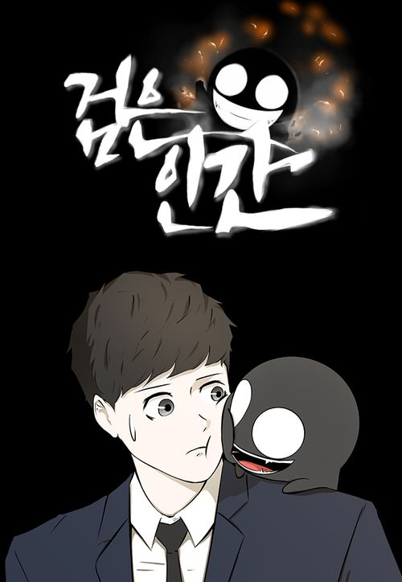

| Dark Mortal | |
|---|---|
|  | |
| Genre | Urban Fantasy, Action, School |
| Writer | Jeonyeok Lee |
| Serial Number | Naver Webtoon |
| Naver Series | |
| Serialization Period |
Part 1: 2018. 12. 16. ~ 2019. 10. 19. |
|
Part 2: 2019. 11. 16. ~ 2020. 07. 12. |
|
| Serialization Cycle | Sunday |
| Usage Level | 15 Years Old |
1. Overview
Korean urban fantasy webtoon. The author is Jeonyeok Lee.
2. Plot
Your scars, your eyes, and... your strength!
I'll change everything from now on.It deals with the story of 'Gangnam', a high school student who lost his sight with his parents in a fire accident and suffered burns, but was cured of his blindness and burns with the ability of 'Kkamjangi'(Dark).
3. Serial Status
After being serialized in Naver Best Challenge Comics, it was promoted to an official webtoon and serialized every Sunday from December 16, 2018 on Naver Webtoon
It was completed with a total of 81 episodes on July 12, 2020.
The writer said that he would make it for free for 1 year, and after 1 year and 1 month, it was paid in August 2021. However, readers praised the decision of the writer, saying that they would rather pay more to see it.
4. Characteristics
The story is slightly different from the best challenge webtoon.
The writer's words are not missing in every episode, as if the writer pays great attention to communication with the readers. Readers are also responding positively, asking if there are any other writers besides this writer who can communicate with the author's words.
Unusually, there are many people whose real names are not revealed in the work. In particular, in the case of Professor Jang Ji-woong's subordinates, they do not even have nicknames in the work, let alone their real names, so most of them are called Jang Ji-woong's (Professor Jang's) subordinates, scar-green hair-blue hair.
5. Characters
5.1 Protagonist
Gang Nam
The main character of this work.
'Kkamjangi'(Dark)
A small, pitch-black existence that can only be seen by Gangnam.
5.2 Family of Gangnam
Grandfather
A grandfather who raised Gangnam alone after losing his entire family at a young age.
Kang Geon
5.3 School Figure
Lee Ha-Byeol
Gang Nam's Classmate.
Lee Jin-Hyeok
Lee Ha-Byeol's older brother.
Jang Seo-Ho
Gang Nam's friend and the son of professor Jang.
Jo Ho-Nam
Gang Nam's Classmate.
Kim Ji-Hye
Gang Nam's Classmate.
Lee Da-Hyeon
Gang Nam's friend and a girl he's know for since childhood.
Lee Gi-Chan
School bully. Although he is a friend of Lee Jin-Hyeok, Lee Jin-Hyeok is dissatisfied with Gi-Chan's behavior. He quarrels with Gang Nam, who has just transferred to the school, and gets angry with Gang Nam, who has been possessed by a black man. Afterwards, he bought other bullies as bribes and tried to attack Gang Nam in the back alley of the school, but this time he was robbed by Gang Nam who was possessed by a black man.
After being completely defeated, he is threatened by other bully seniors at school. GiChan says that Gang Nam did it, but the bully seniors start beating him, saying that he was beaten by other bullies that GiChan ordered and not to say anything else. After that Lee Jin-Hyeok appears, Gi-Chan lamented to Lee Jin-Hyeok that he was over, but Jin-Hyeok criticized his immature behavior and left his seat, saying that he had grown up. In the last episode, he seeing Lee Jin-hyeok winning the national boxing competition on TV, he was impressed with something and left the house with a bag, suggesting rebirth. In the epilogue, Lee Gi-Chan and Lee Jin-hyeok were shown talking to each other at a convenience store table.
5.4 Professor Jang People
Professor Jang Ji-Woong
The researcher who planned the Black Man Project and Jang Seo-ho's father. The greatest villain of this work, and the culprit behind everything. He is the one who created the black man, and even ruined the lives of Kang Geon and Gangnam through heinous human experimentation, and even used his wife and children as test subjects. Socially, a high authority in biotechnology. In the end, everything came back to poison, and his mentality was completely shattered by counterattacks from the test subjects he had been forcing, and he did not die, but was imprisoned in a mental hospital.
CEO Park
A well-known wealthy man who is supporting the Professor's project. It is the closest person to Professor. However, the past of this human being was truly an ugly human being. Da-hyeon's mother, who was already married, liked her and joined in killing Dr. Lee. After that, Da-hyeon mother got acquainted and remarried, stealing Dr. Lee's place. In the end, he becomes a puppet for Gang Nam and meets an empty end.
Professor's subordinate 1 (one-eyed scar)
Part 1 final boss. He has been following Gang Nam all along, doing background investigations, and at the end of Part 1, it is revealed that this human being is the culprit who murdered Gang Nam's family 10 years ago by faking arson. When his brother, Kang Geon, also dies, all the black man in his body are absorbed into Gang Nam's body. And his grandfather, who was the protector of Gang Nam, was swept away by this human and died. Of course, this human also faces a terrible end to the angry black man of Gang Nam.
Professor's subordinate 2 (green hair)
Professor's subordinate 3 (blue hair)
Dr. Lee
A researcher for Jang Jo-su and Lee Da-hyeon's father. He is already deceased at the time of writing. He falls into the trap of CEO Park and Jang Ji-woong and dies in vain.
5.5 Other Person
Scar Firefighter
At the time of Gang Nam's childhood accident, he received the grandfather who committed himself to embrace Gang Nam. Afterwards, he reappears in praise of Gang Nam for saving CEO Park.
Scar Firefighter's Henchman
Lee Da-hyeon's mother
She is Dr. Lee's wife, and she and her husband lost a leg in an unexpected car accident. Afterwards, CEO Park implanted her black man to fix her leg, and she remarried CEO Park.
6. Setting
Black Man
The mysterious black creatures that the professor is researching.
Black Man Project
A top-secret project that was carried out to create a black man.
7. Evaluation
Likes and dislikes vary considerably. The development of the work goes smoothly, the action scenes are excellent, and the number of rice cakes is not bad, so it is evaluated as a considerable masterpiece. In addition, while advocating cool and refreshing winding and punishing evil, sadness and catharsis are properly harmonized on the other side.
However, there are some critics from some quarters. The overall character and story development is very flat and monotonous, and the distribution of weight among the characters is also unstable. In particular, although Lee Da-hyun is a character closely related to the villain side, he does not play any role, let alone participate in the main story. There are many evaluations that the drawing is also unstable.
Here is some Gang Nam analects:
"It's okay... I just want mom and dad to be happy..."
"Be strong and courageous!"
"'Teacher likes black. It's have the brightest thoughts.'"
Who is your Favorite Characters?
Fan Animation
© 2022 Namu Wiki. All Rights Reserved.